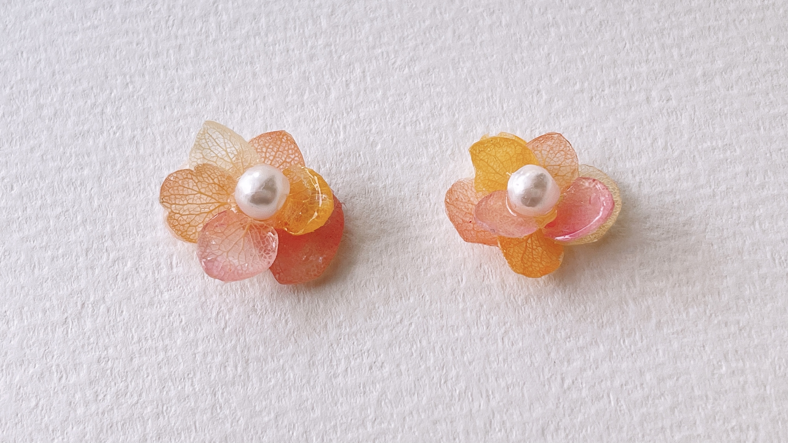

芸工際 缶バッチ
芸工祭という学園祭にだす公式グッズのアイデアとデザインを担当しました。 芸工祭のnomnomというテーマは咀嚼のむしゃむしゃという擬音語で作品を味わいつくすという意味で作られました。 缶バッジのデザインを考える際にこのむしゃむしゃという親しみやすくポップな雰囲気と味わいつくすというテーマ性を感じさせるデザインにしたいと思い真ん中にエンブレムを置き、 サイドにナイフとフォークの缶バッジをデザインした。台紙にも缶バッジありきの遊び心を加えたデザインをしたいと思い、缶バッジに合わせてナプキンとお皿が置かれた台紙を考えました。
芸工際 モーテルキー
使用ソフト:Illustrator
芸工際 個人制作
ポップコーンの造形をイメージし、nomnomのエンブレムにも使われている色で塗りコーティングをしたイヤリングです。
私たちに馴染み深いジャンクフードを独特の色で染め上げたnomnomのイメージにあったものが作れたと思います。
アクセサリー
６月に制作したアクセサリー。
紫陽花の花繊細な美しさやその土地によって色が変化するという特徴が好きだったのでその魅力が伝わるようなアクセサリーを作りたいと思い、
実際にはあり得ない一つの花にさまざまな色の花びらを持つ紫陽花のアクセサリーを作りました。
